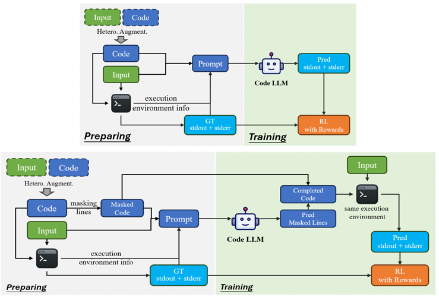
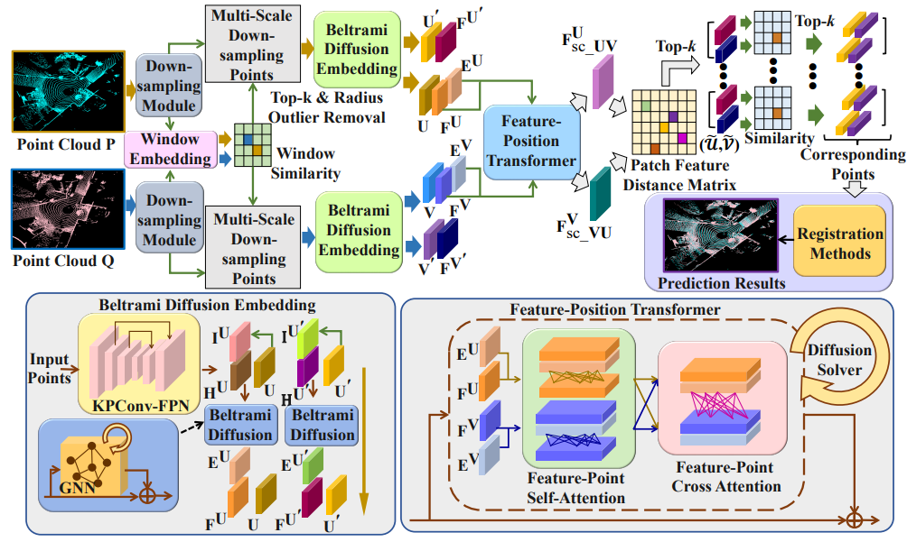

CodeBoost: Boosting Code LLMs by Squeezing Knowledge from Code Snippets with RL
arXiv, 2025
Sijie Wang, Quanjiang Guo, Kai Zhao, Yawei Zhang, Xin Li, Xiang Li, Siqi Li, Rui She, Shangshu Yu, Wee Peng Tay
arXiv, 2025
Sijie Wang, Quanjiang Guo, Kai Zhao, Yawei Zhang, Xin Li, Xiang Li, Siqi Li, Rui She, Shangshu Yu, Wee Peng Tay

UAVScenes: A Multi-Modal Dataset for UAVs
ICCV, 2025
Sijie Wang, Siqi Li, Yawei Zhang, Shangshu Yu, Shenghai Yuan, Rui She, et. al., Lihua Xie, Wee Peng Tay
[repo]
ICCV, 2025
Sijie Wang, Siqi Li, Yawei Zhang, Shangshu Yu, Shenghai Yuan, Rui She, et. al., Lihua Xie, Wee Peng Tay
[repo]
Bridging Generative and Discriminative Learning: Few-Shot Relation Extraction via Two-Stage Knowledge-Guided Pre-training
IJCAI, 2025
Quanjiang Guo, Jinchuan Zhang, Sijie Wang, Ling Tian, Zhao Kang, Bin Yan, Weidong Xiao
IJCAI, 2025
Quanjiang Guo, Jinchuan Zhang, Sijie Wang, Ling Tian, Zhao Kang, Bin Yan, Weidong Xiao
Multi-Modal Aerial-Ground Cross-View Place Recognition with Neural ODEs
CVPR, 2025
Sijie Wang, Rui She, Qiyu Kang, Siqi Li, Disheng Li, Tianyu Geng, Shangshu Yu, Wee Peng Tay
CVPR, 2025
Sijie Wang, Rui She, Qiyu Kang, Siqi Li, Disheng Li, Tianyu Geng, Shangshu Yu, Wee Peng Tay

STGC-NeRF: Spatial-Temporal Geometric Consistency for LiDAR Neural Radiance Fields in Dynamic Scenes
AAAI, 2025
Shangshu Yu, Xiaotian Sun, Wen Li, Qingshan Xu, Zhimin Yuan, Sijie Wang, Rui She, Cheng Wang
AAAI, 2025
Shangshu Yu, Xiaotian Sun, Wen Li, Qingshan Xu, Zhimin Yuan, Sijie Wang, Rui She, Cheng Wang
BANER: Boundary-Aware LLMs for Few-Shot Named Entity Recognition
International Conference on Computational Linguistics (COLING), 2025
Quanjiang Guo, Yihong Dong, Ling Tian, Zhao Kang, Yu Zhang, Sijie Wang
International Conference on Computational Linguistics (COLING), 2025
Quanjiang Guo, Yihong Dong, Ling Tian, Zhao Kang, Yu Zhang, Sijie Wang
PRFusion: Toward Effective and Robust Multi-Modal Place Recognition With Image and Point Cloud Fusion
IEEE TITS, 2024
Sijie Wang, Qiyu Kang, Rui She, Kai Zhao, Yang Song, Wee Peng Tay
IEEE TITS, 2024
Sijie Wang, Qiyu Kang, Rui She, Kai Zhao, Yang Song, Wee Peng Tay

PointDifformer: Robust Point Cloud Registration with Neural Diffusion and Transformer
IEEE TGRS, 2024
Rui She, Qiyu Kang, Sijie Wang, Wee Peng Tay, Kai Zhao, Yang Song, Tianyu Geng, Yi Xu, Diego Navarro Navarro, Andreas Hartmannsgruber
IEEE TGRS, 2024
Rui She, Qiyu Kang, Sijie Wang, Wee Peng Tay, Kai Zhao, Yang Song, Tianyu Geng, Yi Xu, Diego Navarro Navarro, Andreas Hartmannsgruber
DistilVPR: Cross-Modal Knowledge Distillation for Visual Place Recognition
AAAI, 2024
Sijie Wang, Rui She, Qiyu Kang, Xingchao Jian, Kai Zhao, Yang Song, Wee Peng Tay
AAAI, 2024
Sijie Wang, Rui She, Qiyu Kang, Xingchao Jian, Kai Zhao, Yang Song, Wee Peng Tay

PosDiffNet: Positional Neural Diffusion for Point Cloud Registration in a Large Field of View with Perturbations
AAAI, 2024
Rui She, Sijie Wang, Qiyu Kang, Kai Zhao, Yang Song, Wee Peng Tay, Tianyu Geng, Xingchao Jian
AAAI, 2024
Rui She, Sijie Wang, Qiyu Kang, Kai Zhao, Yang Song, Wee Peng Tay, Tianyu Geng, Xingchao Jian
RobustMat: Neural Diffusion for Street Landmark Patch Matching under Challenging Environments
IEEE TIP, 2023
Rui She, Qiyu Kang, Sijie Wang, Yuán-Ruì Yáng, Kai Zhao, Yang Song, Wee Peng Tay
IEEE TIP, 2023
Rui She, Qiyu Kang, Sijie Wang, Yuán-Ruì Yáng, Kai Zhao, Yang Song, Wee Peng Tay
Robust Graph Neural Diffusion for Image Matching
IEEE ICIP, 2023
Rui She, Qiyu Kang, Sijie Wang, Kai Zhao, Yang Song, Yi Xu, Tianyu Geng, Wee Peng Tay, Diego Navarro Navarro, Andreas Hartmannsgruber
IEEE ICIP, 2023
Rui She, Qiyu Kang, Sijie Wang, Kai Zhao, Yang Song, Yi Xu, Tianyu Geng, Wee Peng Tay, Diego Navarro Navarro, Andreas Hartmannsgruber
HypLiLoc: Towards Effective LiDAR Pose Regression with Hyperbolic Fusion
CVPR, 2023
Sijie Wang, Qiyu Kang, Rui She, Wei Wang, Kai Zhao, Yang Song, Wee Peng Tay
CVPR, 2023
Sijie Wang, Qiyu Kang, Rui She, Wei Wang, Kai Zhao, Yang Song, Wee Peng Tay
RobustLoc: Robust Camera Pose Regression in Challenging Driving Environments
AAAI, 2023
Sijie Wang, Qiyu Kang, Rui She, Wee Peng Tay, Andreas Hartmannsgruber, Diego Navarro Navarro
AAAI, 2023
Sijie Wang, Qiyu Kang, Rui She, Wee Peng Tay, Andreas Hartmannsgruber, Diego Navarro Navarro
On the Robustness of Graph Neural Diffusion to Topology Perturbations
NeurIPS, 2022
Yang Song, Qiyu Kang, Sijie Wang, Kai Zhao, Wee Peng Tay
NeurIPS, 2022
Yang Song, Qiyu Kang, Sijie Wang, Kai Zhao, Wee Peng Tay
Building Facade Parsing R-CNN
arXiv preprint, 2022
Sijie Wang, Qiyu Kang, Rui She, Wee Peng Tay, Diego Navarro Navarro, Andreas Hartmannsgruber
arXiv preprint, 2022
Sijie Wang, Qiyu Kang, Rui She, Wee Peng Tay, Diego Navarro Navarro, Andreas Hartmannsgruber
Services
Conference Reviewer: NeurIPS, ICLR, CVPR, ICCV, AAAIJournal Reviewer: OJVT, TIV, Pattern Recognition, TGRS, RAL, IOTJ, TIP